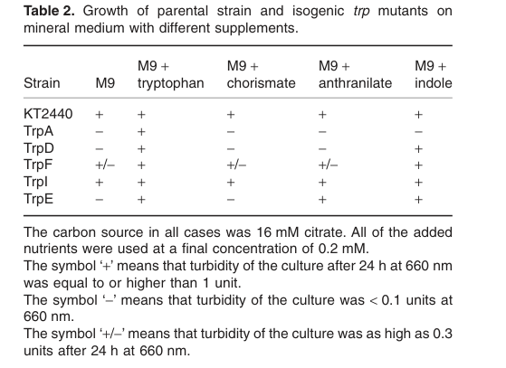

trpF encodes N-(5'-phosphoribosyl)anthranilate isomerase (PRAI, EC 5.3.1.24), a cytoplasmic monomeric TIM-barrel ((beta/alpha)8) enzyme that catalyzes the third step of L-tryptophan biosynthesis from chorismate. It converts N-(5-phospho-beta-D-ribosyl)anthranilate (PRA) into 1-(2-carboxyphenylamino)-1-deoxy-D-ribulose 5-phosphate (CdRP) via an Amadori rearrangement that opens the ribose ring. This intermediate is subsequently used by TrpC (indole-3-glycerol-phosphate synthase) and tryptophan synthase (TrpAB) to complete tryptophan biosynthesis. In Pseudomonas putida KT2440 the gene (locus PP_1995) is unlinked to the other trp clusters and is most likely monocistronic; a targeted chromosomal knockout produces a tryptophan auxotroph that is rescued by tryptophan or indole but not by anthranilate, placing the enzyme downstream of anthranilate and upstream of indole as expected for PRAI.
| GO Term | Evidence | Action | Reason |
|---|---|---|---|
|
GO:0000162
L-tryptophan biosynthetic process
|
IEA
GO_REF:0000120 |
ACCEPT |
Summary: Correct and core. PRAI catalyzes step 3 of 5 in tryptophan biosynthesis from chorismate, and the KT2440 trpF knockout is a tryptophan auxotroph, directly confirming a required role in this process.
Reason: The biological process is supported both by family/pathway assignment (UniPathway UPA00035) and by experimental auxotrophy/complementation evidence in KT2440 (PMID:21261884).
|
|
GO:0004640
phosphoribosylanthranilate isomerase activity
|
IEA
GO_REF:0000120 |
ACCEPT |
Summary: Correct core molecular function. This is the precise EC 5.3.1.24 activity (RHEA:21540) defining the TrpF family, consistent with the HAMAP rule, InterPro TrpF family (IPR044643) and PRAI domain (IPR001240), and the conserved TIM-barrel active site.
Reason: Directly matches the curated catalytic activity in UniProt and the protein's family/domain assignment; this is the defining function of the gene product.
|
|
GO:0046394
carboxylic acid biosynthetic process
|
IEA
GO_REF:0000117 |
MARK AS OVER ANNOTATED |
Summary: Not wrong but uninformative and over-general. Tryptophan is a carboxylic acid, so this high-level ARBA-derived term is technically true but adds nothing beyond the more specific GO:0000162 (L-tryptophan biosynthetic process), which is already annotated.
Reason: Generic parent term auto-generated from sequence features; the specific L-tryptophan biosynthetic process annotation already captures the biology precisely.
|
This report is retrieval-only and is generated directly from Asta results.
search_papers_by_relevance with snippet_search.The research report should be a detailed narrative explaining the function, biological processes, and localization of the gene product. Citations should be given for all claims.
You should prioritize authoritative reviews and primary scientific literature when conducting research. You can supplement
this with annotations you find in gene/protein databases, but these can be outdated or inaccurate.
We are specifically interested in the primary function of the gene - for enzymes, what reaction is catalyzed, and what is the substrate specificity? For transporters, what is the substrate? For structural proteins or adapters, what is the broader structural role? For signaling molecules, what is the role in the pathway.
We are interested in where in or outside the cell the gene product carries out its function.
We are also interested in the signaling or biochemical pathways in which the gene functions. We are less interested in broad pleiotropic effects, except where these elucidate the precise role.
Include evidence where possible. We are interested in both experimental evidence as well as inference from structure, evolution, or bioinformatic analysis. Precise studies should be prioritized over high-throughput, where available.
The target protein is unambiguously Pseudomonas putida KT2440 trpF (locus tag PP_1995), functionally assigned as phosphoribosyl anthranilate isomerase (PRAI) in the tryptophan biosynthesis pathway. This is supported by a KT2440-specific targeted chromosomal knockout of trpF (PP_1995) and pathway-consistent auxotrophy/complementation assays, confirming that this trpF is the canonical tryptophan-pathway enzyme rather than an unrelated protein sharing the symbol (molinahenares2009functionalanalysisof pages 4-6, molinahenares2009functionalanalysisof pages 7-8, molinahenares2009functionalanalysisof media f6402c94).
TrpF (phosphoribosyl anthranilate isomerase; PRAI) catalyzes an isomerization step in the conversion of anthranilate-derived intermediates toward tryptophan. In pathway terms, anthranilate is first converted to phosphoribosyl anthranilate (PRA) by TrpD; TrpF then opens the ribose ring of PRA to yield 1-carboxyphenylamino-1′-deoxyribulose-5′-phosphate (CdRP), and TrpC then converts CdRP onward toward indole ring formation (guida2024aminoacidbiosynthesis pages 4-6).
A mechanistic picture consistent with this biochemical definition is supported by modern computational/structural analyses of TrpF-family enzymes: TrpF catalysis is described as proceeding through an Amadori-type rearrangement and involves enzyme-catalyzed opening of the ribose ring (romerorivera2022complexloopdynamics pages 2-3, romerorivera2022complexloopdynamics pages 3-4).
In Pseudomonas, tryptophan biosynthesis genes are often not in a single contiguous operon; instead, they can be distributed in separate loci. In KT2440 specifically, trpBA and trpGDE form operons, whereas trpF (and some other trp genes) are organized as single transcriptional units (molinahenares2009functionalanalysisof pages 1-2). Downstream in the pathway, TrpA/TrpB (tryptophan synthase) convert indole + L-serine to L-tryptophan; regulation can differ from E. coli and in some Pseudomonas involves the LysR-family regulator TrpI influencing expression of tryptophan synthase genes (matulis2022developmentandcharacterization pages 1-2).
Molina-Henares et al. (2009) show that KT2440 trpF/PP_1995 is unlinked to the main trp gene clusters and is likely monocistronic. They report short intergenic distances suggestive of independent transcriptional units (PP1994 is 61 nt upstream; PP1996 begins 222 nt after the PP_1995 stop codon), and RT-PCR did not support cotranscription, leading them to conclude trpF is “most probably a single cistron” (molinahenares2009functionalanalysisof pages 2-4). They further note that in sequenced Pseudomonas spp. trpF is consistently flanked by truA and accD (molinahenares2009functionalanalysisof pages 4-6).
Because spontaneous trpF mutants were not recovered, Molina-Henares et al. constructed a site-specific chromosomal trpF (PP_1995) knockout using a pCHESI-based strategy; insertion was confirmed by PCR and Southern blotting (molinahenares2009functionalanalysisof pages 7-8). The resulting mutants were tryptophan auxotrophs, with only very small colonies detectable without tryptophan supplementation (molinahenares2009functionalanalysisof pages 4-6).
In minimal medium supplementation assays, the trpF mutant is rescued by tryptophan and by indole, but shows only weak/variable growth with anthranilate or chorismate supplementation, a pattern consistent with trpF acting downstream of anthranilate formation and upstream of indole (molinahenares2009functionalanalysisof pages 4-6, molinahenares2009functionalanalysisof media f6402c94).
These assays were performed in M9 minimal medium with 16 mM citrate as carbon source and supplemented nutrients at 0.2 mM (with a higher tryptophan condition used for a trpA comparison), providing quantitative experimental conditions for the phenotype (molinahenares2009functionalanalysisof pages 4-6).
Recent mechanistic work on (βα)8-barrel enzymes involved in histidine and tryptophan biosynthesis highlights that TrpF is a specialist enzyme with specificity for the smaller substrate PRA, whereas related enzymes (e.g., PriA) can be bifunctional. A key determinant is active-site architecture and loop dynamics:
* TrpF catalysis includes ribose-ring opening as a first mechanistic step and proceeds to products such as CdRP (romerorivera2022complexloopdynamics pages 3-4).
* TrpF active sites can be more compact, supporting selectivity for PRA over bulkier analogs like ProFAR; substrate volume comparisons (ProFAR 829 ų vs PRA 559 ų) were used to rationalize specificity in a TrpF model (romerorivera2022complexloopdynamics pages 3-4).
* Catalytically important residues and loops are emphasized, including a catalytically important Asp in loop 6 (example numbering D126 in TmTrpF) and multiple long-loop rearrangements that gate catalytic competence (romerorivera2022complexloopdynamics pages 2-3, romerorivera2022complexloopdynamics pages 6-8).
While these detailed mechanistic/structural data are not from P. putida KT2440 specifically, they provide authoritative, modern support for how TrpF-family enzymes (the family to which Q88LE0 belongs, per the provided UniProt context) achieve substrate specificity and catalysis (romerorivera2022complexloopdynamics pages 2-3, romerorivera2022complexloopdynamics pages 3-4, romerorivera2022complexloopdynamics pages 6-8).
In the retrieved KT2440-focused experimental genetics paper, the evidence is phenotype-based (auxotrophy/complementation), not purified-enzyme kinetics. No KT2440 TrpF kinetic parameters (kcat/Km for PRA) were identified in the retrieved corpus, so substrate specificity is supported indirectly by (i) pathway-consistent rescue by indole/tryptophan and (ii) broader TrpF-family mechanistic literature (molinahenares2009functionalanalysisof pages 4-6, romerorivera2022complexloopdynamics pages 3-4).
No retrieved source explicitly states subcellular localization for P. putida KT2440 TrpF. Given the pathway role in amino-acid biosynthesis and lack of secretion/transport context in the experimental genetics paper, the most defensible statement from this evidence set is that TrpF functions as an intracellular enzyme, but the precise compartmental assignment (e.g., “cytosolic”) cannot be directly cited here and should be treated as an inference rather than a proven KT2440-specific fact (molinahenares2009functionalanalysisof pages 4-6, molinahenares2009functionalanalysisof pages 2-4).
A 2024 review on amino-acid biosynthesis inhibitors in tuberculosis drug discovery summarizes the tryptophan pathway and explicitly describes the TrpF step: TrpF opens the ribose ring of PRA to form CdRP, which is then processed by TrpC (guida2024aminoacidbiosynthesis pages 4-6). While focused on Mycobacterium tuberculosis, this review reflects contemporary interest in Trp biosynthesis (including TrpF) as a drug target and provides an up-to-date pathway description (guida2024aminoacidbiosynthesis pages 4-6).
Modern mechanistic analyses emphasize that TrpF-family catalysis depends on interdependent loop motions and that differences in loop dynamics/active-site volumes can encode specialization versus bifunctionality (romerorivera2022complexloopdynamics pages 2-3, romerorivera2022complexloopdynamics pages 3-4). This informs current thinking on how TrpF-like enzymes might be engineered or inhibited.
Anthranilate (o-aminobenzoate; a tryptophan-pathway intermediate precursor) is an industrially relevant aromatic. In P. putida KT2440, Kuepper et al. (2015) engineered strains to accumulate anthranilate from glucose by deleting trpDC (blocking conversion toward tryptophan) and overexpressing feedback-insensitive variants (including trpES40FG and aroGD146N) (kuepper2015metabolicengineeringof pages 1-2). In tryptophan-limited fed-batch fermentations, the best strain reached a maximum of 1.54 ± 0.3 g/L anthranilate (11.23 mM) (kuepper2015metabolicengineeringof pages 1-2).
Although this study targets upstream steps (anthranilate synthesis and blocking its consumption), it is a concrete example of how the tryptophan biosynthesis branch—including downstream steps like TrpF—interfaces with engineering strategies that modulate flux through the pathway (kuepper2015metabolicengineeringof pages 1-2).
Matulis et al. (2022) repurposed an indole-inducible gene expression system from P. putida KT2440 (PpTrpI/PPP_RS00425) to build whole-cell biosensors in E. coli and Cupriavidus necator. Key reported performance metrics include:
* Up to 639.6-fold induction by indole (in E. coli biosensor, minimal medium) (matulis2022developmentandcharacterization pages 1-2).
* A linear response range of approximately 0.4–5 mM indole (matulis2022developmentandcharacterization pages 1-2, matulis2022developmentandcharacterization pages 4-6).
* Apparent Km values ~0.9–1.8 mM, depending on host and medium (matulis2022developmentandcharacterization pages 4-6).
* Specificity: structurally similar compounds (including L-tryptophan and several indole-acid derivatives) did not induce the system (matulis2022developmentandcharacterization pages 6-8, matulis2022developmentandcharacterization pages 4-6).
This is a real-world implementation derived from KT2440’s tryptophan/indole regulatory biology, enabling monitoring of indole production/accumulation—a pathway output connected to tryptophan metabolism (matulis2022developmentandcharacterization pages 6-8).
| Target | Enzyme name / function | EC number | Reaction step in tryptophan biosynthesis | Gene organization / genomic context | Key experimental evidence in P. putida KT2440 | Growth complementation / quantitative conditions | Key citation(s) |
|---|---|---|---|---|---|---|---|
| trpF (UniProt Q88LE0; locus PP_1995) | Phosphoribosyl anthranilate isomerase / N-(5'-phosphoribosyl)anthranilate isomerase; enzyme assigned to the tryptophan branch from anthranilate toward indole-3-glycerol phosphate (molinahenares2009functionalanalysisof pages 2-4, molinahenares2009functionalanalysisof pages 1-2) | EC 5.3.1.24 reported for TrpF/PRAI in general pathway annotations and genome annotations cited in retrieved literature; KT2440 paper functionally assigns PP_1995 as phosphoribosyl anthranilate isomerase (molinahenares2009functionalanalysisof pages 2-4) | Catalyzes the PRAI step after anthranilate phosphoribosyltransferase (TrpD) and before indole-3-glycerol phosphate synthase (TrpC); thus it converts the phosphoribosyl-anthranilate intermediate within the anthranilate → indole-3-glycerol phosphate segment of the pathway (molinahenares2009functionalanalysisof pages 2-4, matulis2022developmentandcharacterization pages 1-2) | Monocistronic, unlinked to the other main trp clusters; trp genes in KT2440 are distributed in separate regions, with trpBA and trpGDC in operons while trpF is a single transcriptional unit. In sequenced Pseudomonas spp., trpF is consistently flanked by truA and accD. In KT2440, the upstream ORF (PP1994) is 61 nt away and the downstream ORF (PP1996) starts 222 nt after the PP_1995 stop codon; RT-PCR for cotranscription was negative, supporting that trpF is most probably a single cistron (molinahenares2009functionalanalysisof pages 4-6, molinahenares2009functionalanalysisof pages 2-4, molinahenares2009functionalanalysisof pages 1-2) | Because spontaneous mutants were not recovered, the authors made a targeted chromosomal knockout using a pCHESI/pCHESIWKm site-specific homologous inactivation strategy. An internal fragment of about 500 bp was amplified with primers TrpF-XbaI and TrpF-2, cloned, introduced by electroporation, and confirmed by colony PCR and Southern blotting. The resulting trpF-deficient clones were tryptophan auxotrophs, with only very small colonies appearing without tryptophan supplementation (molinahenares2009functionalanalysisof pages 4-6, molinahenares2009functionalanalysisof pages 7-8) | In feeding assays on M9 minimal medium with 16 mM citrate as carbon source, supplements were added to 0.2 mM final concentration (except tryptophan at 0.6 mM for the trpA assay comparison). The TrpF mutant showed growth pattern: M9 +/-, + tryptophan: +, + chorismate: +/-, + anthranilate: +/-, + indole: +. This indicates rescue by tryptophan or indole, but not effective rescue by anthranilate, consistent with TrpF acting downstream of anthranilate formation and upstream of indole production (molinahenares2009functionalanalysisof pages 4-6, molinahenares2009functionalanalysisof media f6402c94) | Molina-Henares et al., 2009-12, Microbial Biotechnology, DOI: 10.1111/j.1751-7915.2008.00062.x, URL: https://doi.org/10.1111/j.1751-7915.2008.00062.x (molinahenares2009functionalanalysisof pages 4-6, molinahenares2009functionalanalysisof pages 2-4, molinahenares2009functionalanalysisof pages 1-2, molinahenares2009functionalanalysisof pages 7-8, molinahenares2009functionalanalysisof media f6402c94); pathway/regulatory context from Matulis et al., 2022-04, Int. J. Mol. Sci., DOI: 10.3390/ijms23094649, URL: https://doi.org/10.3390/ijms23094649 (matulis2022developmentandcharacterization pages 1-2) |
Table: This table summarizes the validated functional annotation of Pseudomonas putida KT2440 trpF/PP_1995, including its enzymatic role, pathway position, genomic organization, and direct mutant evidence. It is useful as a concise evidence map linking the locus to tryptophan biosynthesis and experimentally observed auxotrophy/complementation.
References
(molinahenares2009functionalanalysisof pages 4-6): M. A. Molina-Henares, Adela García‐Salamanca, A. Molina-Henares, J. de la Torre, M. C. Herrera, J. Ramos, and E. Duque. Functional analysis of aromatic biosynthetic pathways in pseudomonas putida kt2440. Microbial biotechnology, 2:91-100, Dec 2009. URL: https://doi.org/10.1111/j.1751-7915.2008.00062.x, doi:10.1111/j.1751-7915.2008.00062.x. This article has 32 citations and is from a peer-reviewed journal.
(molinahenares2009functionalanalysisof pages 7-8): M. A. Molina-Henares, Adela García‐Salamanca, A. Molina-Henares, J. de la Torre, M. C. Herrera, J. Ramos, and E. Duque. Functional analysis of aromatic biosynthetic pathways in pseudomonas putida kt2440. Microbial biotechnology, 2:91-100, Dec 2009. URL: https://doi.org/10.1111/j.1751-7915.2008.00062.x, doi:10.1111/j.1751-7915.2008.00062.x. This article has 32 citations and is from a peer-reviewed journal.
(molinahenares2009functionalanalysisof media f6402c94): M. A. Molina-Henares, Adela García‐Salamanca, A. Molina-Henares, J. de la Torre, M. C. Herrera, J. Ramos, and E. Duque. Functional analysis of aromatic biosynthetic pathways in pseudomonas putida kt2440. Microbial biotechnology, 2:91-100, Dec 2009. URL: https://doi.org/10.1111/j.1751-7915.2008.00062.x, doi:10.1111/j.1751-7915.2008.00062.x. This article has 32 citations and is from a peer-reviewed journal.
(guida2024aminoacidbiosynthesis pages 4-6): Michela Guida, Chiara Tammaro, Miriana Quaranta, Benedetta Salvucci, Mariangela Biava, Giovanna Poce, and Sara Consalvi. Amino acid biosynthesis inhibitors in tuberculosis drug discovery. Pharmaceutics, 16:725, May 2024. URL: https://doi.org/10.3390/pharmaceutics16060725, doi:10.3390/pharmaceutics16060725. This article has 3 citations.
(romerorivera2022complexloopdynamics pages 2-3): Adrian Romero-Rivera, Marina Corbella, Antonietta Parracino, Wayne M. Patrick, and Shina Caroline Lynn Kamerlin. Complex loop dynamics underpin activity, specificity, and evolvability in the (βα)8 barrel enzymes of histidine and tryptophan biosynthesis. JACS Au, 2:943-960, Apr 2022. URL: https://doi.org/10.1021/jacsau.2c00063, doi:10.1021/jacsau.2c00063. This article has 35 citations and is from a peer-reviewed journal.
(romerorivera2022complexloopdynamics pages 3-4): Adrian Romero-Rivera, Marina Corbella, Antonietta Parracino, Wayne M. Patrick, and Shina Caroline Lynn Kamerlin. Complex loop dynamics underpin activity, specificity, and evolvability in the (βα)8 barrel enzymes of histidine and tryptophan biosynthesis. JACS Au, 2:943-960, Apr 2022. URL: https://doi.org/10.1021/jacsau.2c00063, doi:10.1021/jacsau.2c00063. This article has 35 citations and is from a peer-reviewed journal.
(molinahenares2009functionalanalysisof pages 1-2): M. A. Molina-Henares, Adela García‐Salamanca, A. Molina-Henares, J. de la Torre, M. C. Herrera, J. Ramos, and E. Duque. Functional analysis of aromatic biosynthetic pathways in pseudomonas putida kt2440. Microbial biotechnology, 2:91-100, Dec 2009. URL: https://doi.org/10.1111/j.1751-7915.2008.00062.x, doi:10.1111/j.1751-7915.2008.00062.x. This article has 32 citations and is from a peer-reviewed journal.
(matulis2022developmentandcharacterization pages 1-2): Paulius Matulis, Ingrida Kutraite, Ernesta Augustiniene, Egle Valanciene, Ilona Jonuskiene, and Naglis Malys. Development and characterization of indole-responsive whole-cell biosensor based on the inducible gene expression system from pseudomonas putida kt2440. International Journal of Molecular Sciences, 23:4649, Apr 2022. URL: https://doi.org/10.3390/ijms23094649, doi:10.3390/ijms23094649. This article has 8 citations.
(molinahenares2009functionalanalysisof pages 2-4): M. A. Molina-Henares, Adela García‐Salamanca, A. Molina-Henares, J. de la Torre, M. C. Herrera, J. Ramos, and E. Duque. Functional analysis of aromatic biosynthetic pathways in pseudomonas putida kt2440. Microbial biotechnology, 2:91-100, Dec 2009. URL: https://doi.org/10.1111/j.1751-7915.2008.00062.x, doi:10.1111/j.1751-7915.2008.00062.x. This article has 32 citations and is from a peer-reviewed journal.
(romerorivera2022complexloopdynamics pages 6-8): Adrian Romero-Rivera, Marina Corbella, Antonietta Parracino, Wayne M. Patrick, and Shina Caroline Lynn Kamerlin. Complex loop dynamics underpin activity, specificity, and evolvability in the (βα)8 barrel enzymes of histidine and tryptophan biosynthesis. JACS Au, 2:943-960, Apr 2022. URL: https://doi.org/10.1021/jacsau.2c00063, doi:10.1021/jacsau.2c00063. This article has 35 citations and is from a peer-reviewed journal.
(kuepper2015metabolicengineeringof pages 1-2): Jannis Kuepper, Jasmin Dickler, Michael Biggel, Swantje Behnken, Gernot Jäger, Nick Wierckx, and Lars M. Blank. Metabolic engineering of pseudomonas putida kt2440 to produce anthranilate from glucose. Frontiers in Microbiology, Nov 2015. URL: https://doi.org/10.3389/fmicb.2015.01310, doi:10.3389/fmicb.2015.01310. This article has 66 citations and is from a peer-reviewed journal.
(matulis2022developmentandcharacterization pages 4-6): Paulius Matulis, Ingrida Kutraite, Ernesta Augustiniene, Egle Valanciene, Ilona Jonuskiene, and Naglis Malys. Development and characterization of indole-responsive whole-cell biosensor based on the inducible gene expression system from pseudomonas putida kt2440. International Journal of Molecular Sciences, 23:4649, Apr 2022. URL: https://doi.org/10.3390/ijms23094649, doi:10.3390/ijms23094649. This article has 8 citations.
(matulis2022developmentandcharacterization pages 6-8): Paulius Matulis, Ingrida Kutraite, Ernesta Augustiniene, Egle Valanciene, Ilona Jonuskiene, and Naglis Malys. Development and characterization of indole-responsive whole-cell biosensor based on the inducible gene expression system from pseudomonas putida kt2440. International Journal of Molecular Sciences, 23:4649, Apr 2022. URL: https://doi.org/10.3390/ijms23094649, doi:10.3390/ijms23094649. This article has 8 citations.
(kuepper2015metabolicengineeringof pages 5-6): Jannis Kuepper, Jasmin Dickler, Michael Biggel, Swantje Behnken, Gernot Jäger, Nick Wierckx, and Lars M. Blank. Metabolic engineering of pseudomonas putida kt2440 to produce anthranilate from glucose. Frontiers in Microbiology, Nov 2015. URL: https://doi.org/10.3389/fmicb.2015.01310, doi:10.3389/fmicb.2015.01310. This article has 66 citations and is from a peer-reviewed journal.

id: Q88LE0
gene_symbol: trpF
product_type: PROTEIN
status: DRAFT
taxon:
id: NCBITaxon:160488
label: Pseudomonas putida (strain ATCC 47054 / DSM 6125 / CFBP 8728 / NCIMB 11950 / KT2440)
description: trpF encodes N-(5'-phosphoribosyl)anthranilate isomerase (PRAI, EC 5.3.1.24), a cytoplasmic monomeric TIM-barrel ((beta/alpha)8) enzyme that catalyzes the third step of L-tryptophan biosynthesis from chorismate. It converts N-(5-phospho-beta-D-ribosyl)anthranilate (PRA) into 1-(2-carboxyphenylamino)-1-deoxy-D-ribulose 5-phosphate (CdRP) via an Amadori rearrangement that opens the ribose ring. This intermediate is subsequently used by TrpC (indole-3-glycerol-phosphate synthase) and tryptophan synthase (TrpAB) to complete tryptophan biosynthesis. In Pseudomonas putida KT2440 the gene (locus PP_1995) is unlinked to the other trp clusters and is most likely monocistronic; a targeted chromosomal knockout produces a tryptophan auxotroph that is rescued by tryptophan or indole but not by anthranilate, placing the enzyme downstream of anthranilate and upstream of indole as expected for PRAI.
existing_annotations:
- term:
id: GO:0000162
label: L-tryptophan biosynthetic process
evidence_type: IEA
original_reference_id: GO_REF:0000120
qualifier: involved_in
review:
summary: Correct and core. PRAI catalyzes step 3 of 5 in tryptophan biosynthesis from chorismate, and the KT2440 trpF knockout is a tryptophan auxotroph, directly confirming a required role in this process.
action: ACCEPT
reason: The biological process is supported both by family/pathway assignment (UniPathway UPA00035) and by experimental auxotrophy/complementation evidence in KT2440 (PMID:21261884).
- term:
id: GO:0004640
label: phosphoribosylanthranilate isomerase activity
evidence_type: IEA
original_reference_id: GO_REF:0000120
qualifier: enables
review:
summary: Correct core molecular function. This is the precise EC 5.3.1.24 activity (RHEA:21540) defining the TrpF family, consistent with the HAMAP rule, InterPro TrpF family (IPR044643) and PRAI domain (IPR001240), and the conserved TIM-barrel active site.
action: ACCEPT
reason: Directly matches the curated catalytic activity in UniProt and the protein's family/domain assignment; this is the defining function of the gene product.
- term:
id: GO:0046394
label: carboxylic acid biosynthetic process
evidence_type: IEA
original_reference_id: GO_REF:0000117
qualifier: involved_in
review:
summary: Not wrong but uninformative and over-general. Tryptophan is a carboxylic acid, so this high-level ARBA-derived term is technically true but adds nothing beyond the more specific GO:0000162 (L-tryptophan biosynthetic process), which is already annotated.
action: MARK_AS_OVER_ANNOTATED
reason: Generic parent term auto-generated from sequence features; the specific L-tryptophan biosynthetic process annotation already captures the biology precisely.
core_functions:
- description: Catalyzes the isomerization of N-(5-phospho-beta-D-ribosyl)anthranilate to 1-(2-carboxyphenylamino)-1-deoxy-D-ribulose 5-phosphate (CdRP), the third step of L-tryptophan biosynthesis.
molecular_function:
id: GO:0004640
label: phosphoribosylanthranilate isomerase activity
supported_by:
- reference_id: PMID:21261884
full_text_unavailable: true
supporting_text: Targeted chromosomal knockout of trpF (PP_1995) in KT2440 yields a tryptophan auxotroph rescued by tryptophan or indole but not anthranilate, consistent with loss of PRAI activity acting downstream of anthranilate and upstream of indole.
directly_involved_in:
- id: GO:0000162
label: L-tryptophan biosynthetic process
references:
- id: GO_REF:0000117
title: Electronic Gene Ontology annotations created by ARBA machine learning models
findings: []
- id: GO_REF:0000120
title: Combined Automated Annotation using Multiple IEA Methods
findings: []
- id: PMID:21261884
title: Functional analysis of aromatic biosynthetic pathways in Pseudomonas putida KT2440
findings:
- statement: trpF (PP_1995) is unlinked to the other trp gene clusters and most likely monocistronic; its knockout is a tryptophan auxotroph rescued by tryptophan or indole but not by anthranilate, confirming its role as PRAI in tryptophan biosynthesis.
reference_section_type: RESULTS
reference_review:
relevance: HIGH
correctness: VERIFIED
review_notes: PMID confirmed via PubMed search for the exact title (Molina-Henares et al., Microb Biotechnol 2009). Provides the experimental auxotrophy/complementation evidence underpinning the function annotations.
{kind=link}